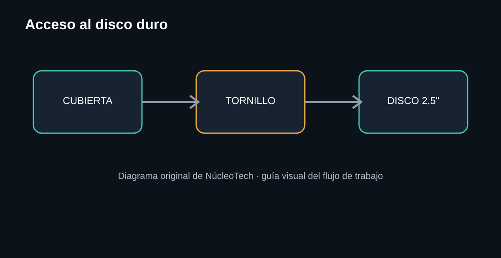
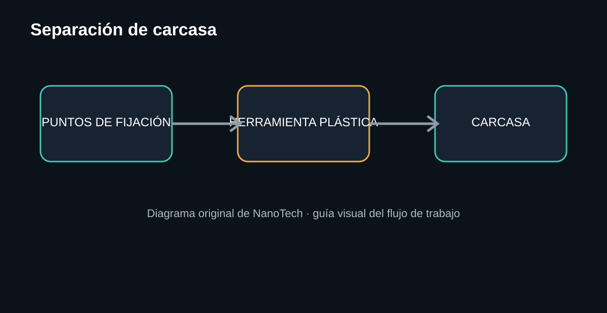
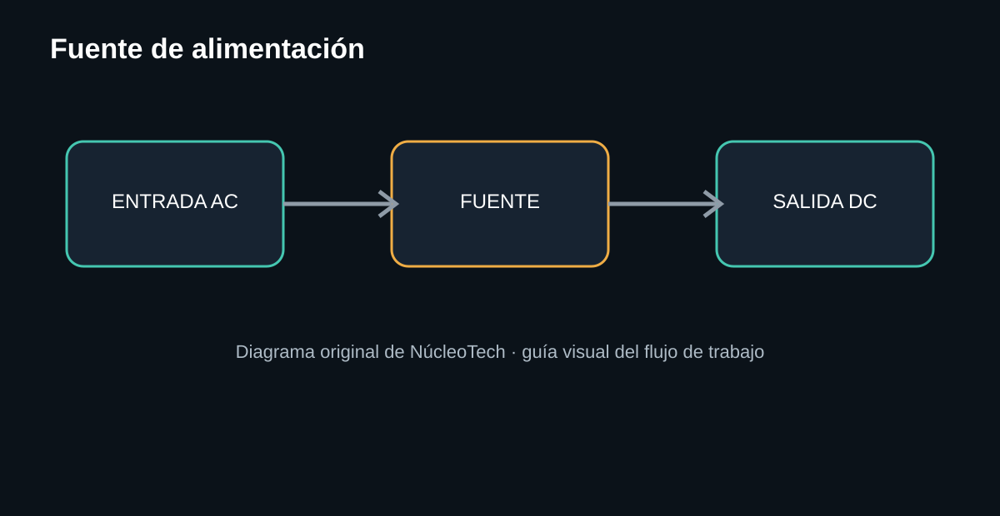
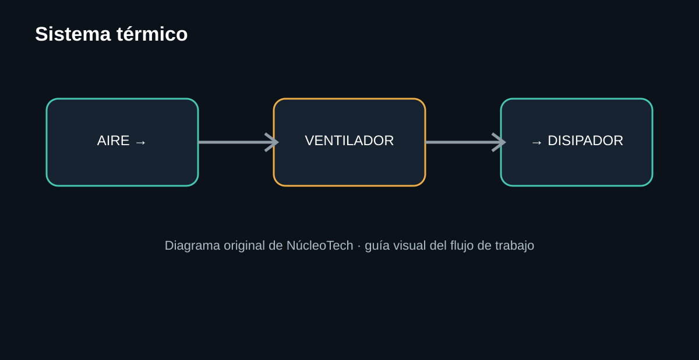
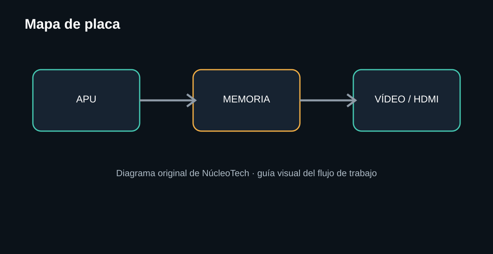
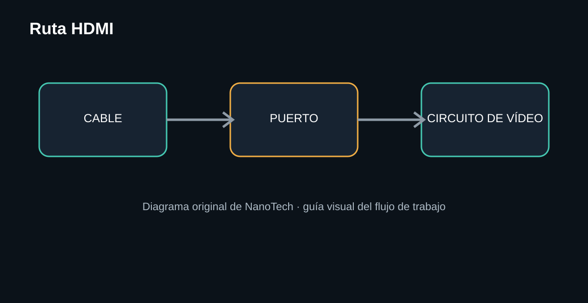
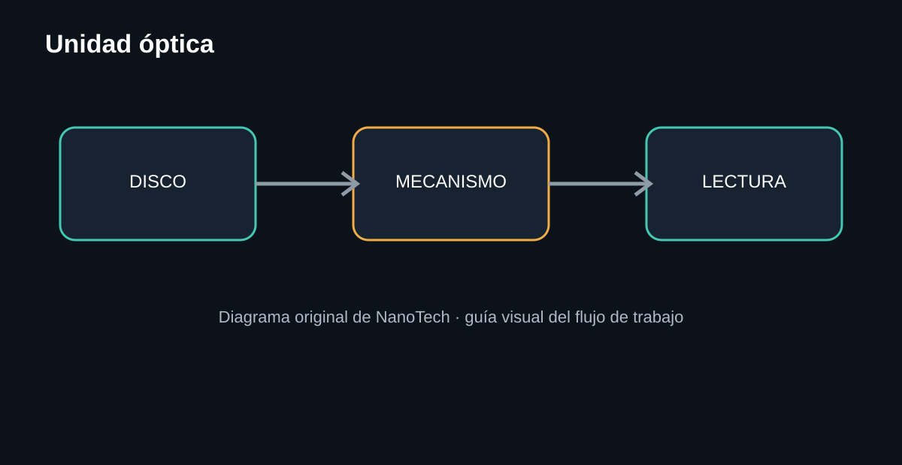
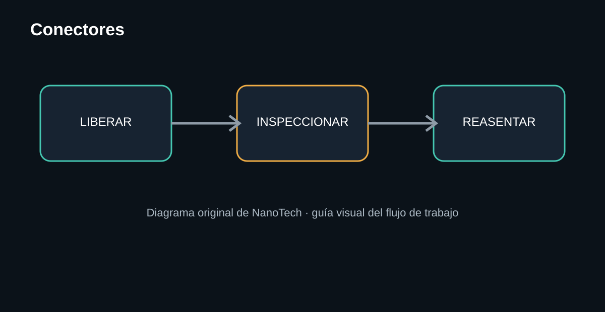

Esta guía combina fotografías de referencia con licencia compatible y diagramas originales de NanoTech. Las fotografías se usan para reconocer el equipo; los pasos de desmontaje se explican con nuestras propias instrucciones y gráficos. No reproducimos fotografías ni textos de terceros.
Antes de abrirla: seguridad
Retira alimentación, HDMI, USB, red y cualquier otro cable. No manipules una fuente de alimentación conectada. Los condensadores de una fuente pueden mantener energía después de desconectar el equipo; si no tienes experiencia en electrónica de potencia, limita el trabajo a inspección y limpieza segura.
- Trabaja sobre una mesa limpia, seca y bien iluminada.
- Organiza los tornillos por etapa; no mezcles longitudes.
- Fotografía cada conector antes de desconectarlo.
- No fuerces una cubierta que todavía tenga una fijación.
Herramientas
La selección de herramientas debe ajustarse a la revisión concreta de la consola; diferentes revisiones pueden variar en tornillería y distribución.
Vista general

La PS4 original integra el procesamiento principal de AMD, memoria GDDR5, almacenamiento interno de 2,5 pulgadas, conectividad inalámbrica, USB, Ethernet y salida HDMI. Las especificaciones exactas pueden variar por revisión.

Qué revisar
- Entrada de alimentación.
- Salida óptica.
- HDMI.
- Ethernet.
- Puerto auxiliar.
Por qué importa
Antes de abrir la consola hay que separar una falla interna de una falla externa. Un HDMI dañado, un cable defectuoso o una entrada de TV incorrecta pueden producir un síntoma que parece una avería de placa.

Procedimiento
- Apaga la consola por completo.
- Desconecta todos los cables.
- Retira la cubierta correspondiente al disco.
- Localiza el tornillo de fijación del soporte.
- Retira el conjunto sin tirar del cableado de otros componentes.
Diagnóstico: si la consola falla al iniciar pero sí enciende, el almacenamiento es una de las áreas que conviene comprobar antes de asumir un problema de placa.

Procedimiento
- Identifica primero todos los puntos de fijación visibles.
- Retira tornillos con la punta adecuada.
- Separa la carcasa progresivamente usando herramienta plástica.
- No introduzcas metal entre superficies plásticas para hacer palanca.
- Cuando una zona se resista, detente y busca una fijación adicional.
Una cubierta que no sale no significa que esté pegada; puede haber un tornillo o clip todavía instalado.

Qué observar
- Estado físico de conectores.
- Marcas de calor o decoloración.
- Daños mecánicos.
- Conectores correctamente asentados.
La fuente es un conjunto que merece un tratamiento diferente al resto de la consola. Para una guía de reparación electrónica, las mediciones deben realizarse con instrumental y procedimiento adecuados; esta guía no indica trabajar sobre una fuente energizada.

Qué revisar
- Entrada y salida de aire.
- Acumulación de polvo.
- Estado del ventilador.
- Contacto térmico del conjunto de disipación.
- Comportamiento térmico durante uso.
Un ventilador ruidoso no identifica por sí solo una falla concreta. Puede haber polvo, restricción de flujo, desgaste del ventilador o un problema térmico diferente.

Mapa de la placa
En esta etapa no conviene empezar a sustituir componentes. Primero identifica zonas funcionales: procesamiento, memoria, alimentación secundaria, almacenamiento, conectividad y vídeo.

Flujo de diagnóstico
- Prueba un cable HDMI conocido como bueno.
- Prueba otra entrada HDMI del televisor.
- Prueba otra pantalla compatible.
- Inspecciona el puerto de la consola con iluminación.
- Busca pines doblados, piezas desplazadas o daño mecánico.
- Si las pruebas externas son correctas, documenta el síntoma antes de pasar al diagnóstico de placa.
En los primeros modelos de PS4 se documentaron problemas de salida de vídeo relacionados con una pieza metálica dentro del conector HDMI que podía quedar desplazada y obstruir contactos. La lección de diagnóstico es importante: inspecciona primero lo visible antes de asumir una falla electrónica compleja.

Diagnóstico antes de desmontar
- Prueba un disco limpio y en buen estado.
- Determina si la consola detecta el disco.
- Escucha si el mecanismo intenta cargarlo.
- Diferencia entre fallo de lectura y fallo de expulsión.
- Solo después inspecciona el mecanismo.
No fuerces un disco atascado ni introduzcas objetos metálicos en la unidad.

- Fotografía el conector antes de retirarlo.
- Libera el seguro si existe.
- Tira del conector, nunca del cable.
- Inspecciona contactos y suciedad.
- Vuelve a asentar el conector sin inclinarlo.
Coloca los tornillos sobre una plantilla de papel o una bandeja dividida por etapas. Mezclar tornillos de longitudes diferentes puede provocar daños al reensamblar.
Diagnóstico: de síntoma a hipótesis
| Síntoma | Primera prueba | Si falla | No asumir todavía |
|---|---|---|---|
| No enciende | Cable, toma y señales de vida | Continuar con alimentación | “Placa dañada” |
| Enciende sin imagen | HDMI, pantalla y puerto | Inspección/diagnóstico de vídeo | “IC HDMI quemado” |
| Se apaga | Momento exacto del apagado | Temperatura/alimentación | “Sobrecalentamiento” sin medir |
| No lee discos | Disco conocido y comportamiento mecánico | Unidad óptica | “Láser dañado” |
| No inicia sistema | Almacenamiento y mensajes | HDD/software | “APU dañada” |
Reensamblaje
- Compara el equipo con las fotografías tomadas durante el desmontaje.
- Comprueba que ningún cable quede atrapado.
- Reinstala soportes y blindajes en el orden inverso.
- Verifica conectores antes de cerrar la carcasa.
- Haz una prueba funcional antes de terminar completamente el cierre cuando el procedimiento concreto lo permita.
- Comprueba vídeo, USB, red, almacenamiento y unidad óptica según el síntoma original.
Fuentes, licencias y metodología
Fotografías: las imágenes de la PS4 utilizadas en esta guía proceden de Wikimedia Commons y se han seleccionado por tener licencia de dominio público. La atribución y la ficha de cada archivo quedan registradas aquí.
- Evan-Amos — Sony-PlayStation-4-PS4-Console-FL.png — dominio público.
- Evan-Amos — Sony-PlayStation-4-PS4-Console-BL.jpg — dominio público.
Referencia técnica: NanoTech utiliza documentación pública de desmontaje y reparación como material de investigación, pero el texto de esta página y sus diagramas son una redacción propia.
La licencia CC BY permite uso comercial cuando se cumplen las condiciones de atribución; por eso NanoTech debe conservar siempre la información de autoría y licencia de cada imagen reutilizada.
Fuentes de investigación: iFixit, desmontaje de PlayStation 4; iFixit, desmontaje de PS4 CUH-1200; Wikimedia Commons, fichas de las imágenes indicadas arriba.